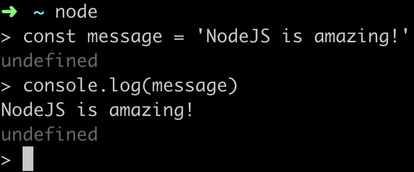
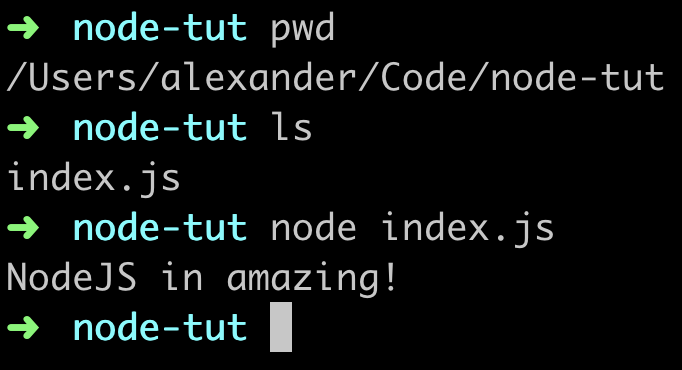
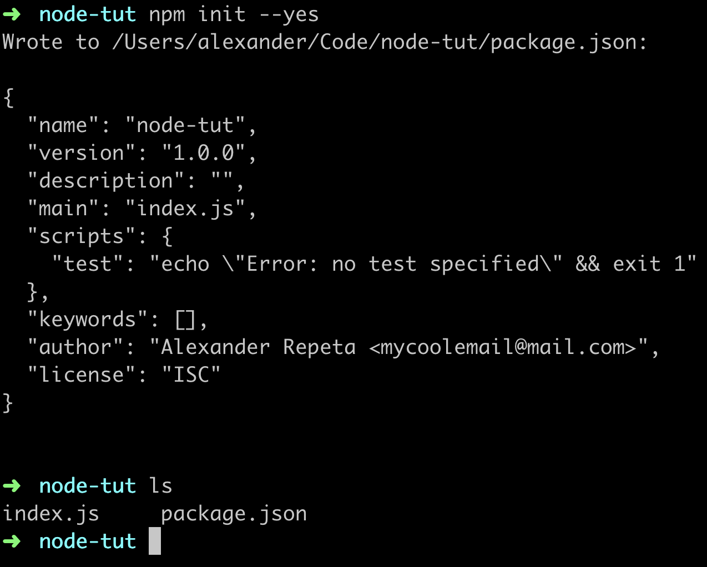
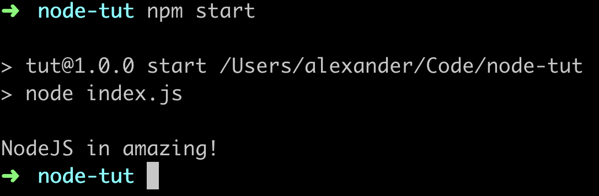
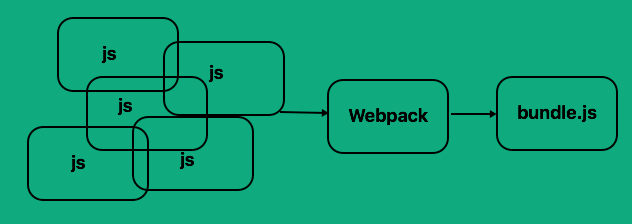

Moduł8 - Zajęcia 15 - Modułowość kodu
Section1 Article1: Node.js
Node.js to lekkie i wydajne środowisko uruchomieniowe dla
JavaScript. Umożliwia pisanie aplikacji i narzędzi serwerowych o
wysokiej wydajności. Node.js jest zbudowany na silniku JavaScript V8
i napisany jest w C++.
Początkowo Node.js został stworzony jako środowisko po stronie
serwera dla frontendowych aplikacji, ale programiści zaczęli go
używać do tworzenia narzędzi pomagających zautomatyzować również
lokalne zadania takie jak kompilowanie SCSS. W rezultacie nowy
ekosystem narzędzi, który pojawił się wokół Node.js, doprowadził do
ogromnych zmian w rozwoju front-endu.
Section1 Article2: Instalacja
Aby zainstalować najnowszą stabilną wersję, przejdź do
strony oficjalnej,
pobierz instalator LTS (Latest Stable Version) i postępuj zgodnie z
instrukcjami. Istnieją instalatory dla wszystkich popularnych
systemów operacyjnych - Windows, MacOS i Linux.
Użytkownicy systemu Windows powinni zaznaczyć odpowiednie pola
wyboru, aby zainstalować wszystkie dodatkowe narzędzia z wyjątkiem
Chocolatey. Spowodowałoby to zainstalowanie Pythona i wszelkiego
rodzaju narzędzi pomocniczych i kompilatorów.
Po instalacji, polecenie node będzie dostępne w terminalu. Aby
sprawdzić, czy instalacja się powiodła, sprawdź wersję, uruchamiając
w konsoli/terminalu polecenie node z flagą version.
Jeśli miałeś wcześniej otwarte okno konsoli pamiętaj aby je wyłączyć
i włączyć z powrotem po instalacji, inaczej komenda może nie być
dostępna pomimo prawidłowej instalacji.
node --version
Section1 Article3: JavaScript poza przeglądarką
Node.js umożliwia uruchamianie kodu JavaScript poza przeglądarką.
Otwórz dowolny terminal i wykonaj polecenie node, uruchomi się REPL
(read-eval-print loop) - interaktywne środowisko uruchomieniowe kodu
JS. Użyjmy go do wyprowadzenia czegoś do konsoli.

Aby wyjść z REPL, naciśnij kombinację Ctrl + C w systemie Windows
lub Control + C na MacOS.
Teraz stwórzmy folder node-tut, a w nim plik index.js z kodem, który
napisaliśmy w REPL. Aby uruchomić ten plik, musisz otworzyć terminal
i przejść do folderu node-tut, który zawiera index.js o treści:
// index.js
const message = "NodeJS in amazing!";
console.log(message);
Teraz w konsoli uruchom plik za pomocą polecenia node index.js i
uzyskasz ten sam wynik - wyświetlenie stringa bezpośrednio w
terminalu (już nie w przeglądarkowej konsoli).

To jest najważniejsza funkcjonalność Node.js - możliwość wykonywania
JavaScript poza przeglądarką. W ten sposób możesz pisać całe
aplikacje, na przykład serwer back-end lub oprogramowanie
narzędziowe niezależne od przeglądarki. Więcej o Node dowiesz się na
ostatnim module naszego kursu.
Section2 Article1: Menedżer pakietów npm
Aby korzystać z całego bogactwa narzędzi (lub pakietów) dla Node.js
potrzebujemy możliwości ich instalacji i zarządzania nimi. W tym
celu powstał NPM (node package manager) - manager pakietów Node.js.
Instaluje on wymagane pakiety i zapewnia przyjazny dla użytkownika
interfejs do pracy z nimi.
NPM składa się z trzech głównych elementów:
-
Strona
npmjs.com -
służy do wyszukiwania i zapoznania się z dokumentacją pakietu.
-
Interfejs wiersza poleceń (CLI) - program uruchamiany z terminala,
udostępnia zestaw poleceń do pracy z rejestrem i pakietami.
Umożliwia tworzenie skryptów również uruchamianych w terminalu.
-
Rejestr pakietów (registry) - duża publiczna baza danych narzędzi
programistycznych (pakietów).
Pakiet / paczka (package) - to mała biblioteka JavaScript, która
rozwiązuje konkretny problem. Pakiety są pisane przez programistów i
udostępniane społeczności. Takie podejście ułatwia życie, ponieważ
nie trzeba wymyślać koła na nowo, wszystkie "koła" od dawna stoją na
półkach rejestru i są gotowe do użycia.
Pakiety abstrahują implementację funkcjonalności, zapewniając
programiście przyjazny dla użytkownika interfejs. Dzięki temu kod
jest czystszy, bardziej czytelny i łatwiejszy w utrzymaniu.
Poniżej wymienimy główne polecenia które będziemy używać i
szczegółowo opisywać.
-
npm init - inicjuje npm w projekcie i tworzy plik package.json
-
npm install - instaluje wszystkie zależności wymienione w
package.json
-
npm list --depth=0 - wyświetla w terminalu listę lokalnie
zainstalowanych pakietów wraz z numerami ich wersji (bez ich
zależności)
-
npm install [package-name] - zainstaluje pakiet lokalnie w
folderze node_modules i zaktualizuje package.json
-
npm uninstall [package-name] - odinstaluje pakiet zainstalowany
lokalnie i zaktualizuje package.json
-
npm start i npm test - uruchomi skrypt start lub test,
zdefiniowany w w package.json
-
npm run [custom-script] - uruchomi niestandardowy skrypt
zdefiniowany w package.json
-
npm outdated - używany do wyszukiwania aktualizacji, programowego
wykrywania niekompatybilnych wersji i wyświetlania listy
dostępnych aktualizacji
-
npm update - zaktualizuje wszystkie pakiety do maksymalnej
dozwolonej wersji
Dokumentacja NPM
Section2 Article2: Inicjowanie projektu
Każdy projekt rozpoczyna się od stworzenia pliku package.json -
śledzi on zależności, zawiera informacje o naszym projekcie,
umożliwia pisanie skryptów npm oraz może służyć jako instrukcja przy
tworzeniu nowego projektu na podstawie gotowych ustawień. Możesz
utworzyć plik package.json za pomocą polecenia npm init w terminalu,
inicjując w ten sposób projekt w bieżącym folderze.
npm init
Zostaniesz poproszony o podanie nazwy projektu, wersji, opisu itp.
Możesz po prostu naciskać Enter, aż plik package.json zostanie
utworzony i umieszczony w folderze projektu. Aby nie naciskać Enter,
pomijając puste pola, użyj polecenia init z flagą --yes. Flaga to
dodatkowe ustawienie polecenia.
npm init --yes
Większość flag ma alias, czyli skrót. Aliasem dla flagi --yes jest
-y, więc polecenia npm init --yes i npm init -y robią to samo. Zwróć
uwagę na ilość myślników, ma ona znaczenie i zarówno flaga --y jak i
-yes nie zadziałają.
package.json zostanie wygenerowany z wartościami domyślnymi. Aby
ustawić na przykład dane autora projektu po wygenerowaniu
package.json, w terminalu uruchom po kolei następujące polecenia,
wstawiając swoje imię oraz e-mail.
npm config set init.author.name "YOUR_NAME"
npm config set init.author.email "YOUR_EMAIL"

Możesz edytować plik package.json ręcznie lub ponownie uruchomić npm
init. Jeśli otworzysz package.json w edytorze, będzie to wyglądało
mniej więcej tak. Są tam metadane dotyczące projektu.
package.json
{
"name": "node-tut",
"version": "1.0.0",
"main": "index.js",
"scripts": {
"test": "echo \"Error: no test specified\" && exit 1"
},
"author": "Alexander Repeta mycoolemail@mail.com>",
"license": "ISC",
"keywords": [],
"description": ""
}
Section2 Article3: Skrypty npm
Skrypty umożliwiają uruchamianie zainstalowanych pakietów i
zautomatyzowanie pewnych działań. Za pomocą skryptów npm można
tworzyć systemy budowania całych projektów. Zautomatyzujmy
uruchamianie index.js. W tym celu w pliku package.json we
właściwości scripts dodaj skrypt startowy start.
package.json
{
"scripts": {
"start": "node index.js"
}
}
Teraz możemy go uruchomić w terminalu za pomocą polecenia npm start.

Jeśli utworzysz skrypt o nazwie innej niż start lub test, należy
uruchamiać go poprzez npm run nazwa-skryptu - nie zapomnij słowa
kluczowego run.
Zapoznaj się z dokumentacja
How npm handles the "scripts" field.
Section2 Article4: Instalacja pakietów
Jedną z możliwości oferowanych przez npm jest instalacja pakietów,
które są odnajdywane w rejestrze i rozpakowywane do folderu
node_modules w katalogu głównym projektu. Po utworzeniu pliku
package.json możesz dodawać zależności do projektu.
Zależność to pakiet npm używany podczas programowania. Są to
wszelkiego rodzaju narzędzia i biblioteki. Zainstaluj bibliotekę
validator.js
która służy do walidacji stringów, na przykład wprowadzonych przez
użytkownika danych w polach formularzy.
npm install validator
NPM pobrał validator i umieścił go w node_modules - folderze, który
będzie zawierał wszystkie zewnętrzne zależności.
Nie dodawaj folderu node_modules do systemu kontroli wersji, wszyscy
programiści będą mogli po prostu zainstalować pakiety na bazie pliku
package.json, nie ma więc potrzeby dodawania setek albo i tysięcy
plików z folderu node_modules.
Jeśli używasz Git, pamiętaj o dodaniu folderu node_modules do pliku
.gitignore.
Zwróć uwagę, że wygenerowany plik package-lock.json jest dziennikiem
wersji drzewa zależności projektu. Zapewnia, że zespół programistów
używa dokładnie tej samej wersji wszystkich zależności. NPM
automatycznie aktualizuje go podczas dodawania, usuwania i
aktualizowania pakietów.
Po instalacji w package.json, w obiekcie dependencies pojawiła się
nowa zależność. Oznacza to, że validator wersji 11.1.0 został
zainstalowany jako zależność i jest gotowy do użycia w naszym
projekcie. Pakiety są stale aktualizowane, więc Twoja wersja może
być wyższa.
package.json
{
"dependencies": {
"validator": "^11.1.0"
}
}
Aby uzyskać interfejs pakietu w kodzie Node.js, musisz wywołać
funkcję require("nazwa-modułu"), przekazując jej nazwę modułu (bez
ścieżki) jako argument - nazywamy to ścieżką bezwzględną. Ścieżka
nie jest potrzebna, ponieważ domyślnie moduł będzie wyszukiwany w
folderze node_modules. W wyniku wykonania funkcji require zwrócony
zostanie interfejs modułu - obiekt z metodami lub po prostu funkcja,
w zależności od pakietu.
index.js
const validator = require("validator");
const validateEmail = email => {
return validator.isEmail(email);
};
console.log(
"Is mango@mail.com a valid email?: ",
validateEmail("mango@mail.com")
);
console.log(
"Is Mangozedog.com a valid email?: ",
validateEmail("Mangozedog.com")
);
Wykonując npm start w terminalu, otrzymujemy.
Is mango@mail.com a valid email?: true
Is Mangozedog.com a valid email?: false
Section2 Article5: Usuwanie pakietów
Załóżmy, że wersja validator zainstalowana w poprzednim przykładzie
powoduje problemy ze zgodnością. Możemy usunąć ten pakiet i
zainstalować starszą wersję.
npm uninstall validator
Section2 Article6: Instalacja określonej wersji pakietu
Teraz zainstalujmy poprawną wersję validator. W poleceniu instalacji
numer wersji jest określony po symbolu @.
npm install validator@1.0.0
Instalacja pakietu określonej wersji jest używana w projektach
komercyjnych, aby zapewnić prawidłowe działanie bazy kodu i
możliwość długoterminowego wsparcia. W projekcie prywatnym możesz
zainstalować najnowsze wersje.
Section2 Article7: Rodzaje zależności
Wyobraź sobie ciasto, do jego przygotowania szef kuchni potrzebuje
produktów, z przepisu. Poza nimi, do gotowania przydadzą się również
narzędzia takie jak miski, łyżki, łopatki itp. W samej kuchni muszą
stanąć stoły, piekarniki, lodówki itp. - to wszystko razem służy do
przygotowania każdej potrawy, wspólne narzędzia, które są w kuchni.
Podobnie jest z zależnościami projektowymi - niektóre zostaną
wykorzystane w powstałym produkcie, inne potrzebne są tylko na
etapie rozwoju projektu, a są też takie, które trzeba wykorzystać
niezależnie od projektu.
Dlatego polecenia npm install i npm uninstall mają trzy flagi.
-
-save - wskazuje, że dodawana jest zależność, która zostanie
włączona do produktu końcowego. Pakiet zostanie zainstalowany
lokalnie w folderze node_modules, a wpis zostanie dodany do pola
dependencies w package.json
-
-save-dev - wskazuje, że dodano zależność programistyczną. Pakiet
zostanie zainstalowany lokalnie w folderze node_modules, a wpis
zostanie dodany do pola devDependencies w package.json. Oznacza
to, że w wersji produkcyjnej na serwerze ta zależność nie musi być
instalowana.
-
-global - wskazuje, że dodawana jest globalna zależność, czyli
narzędzie dostępne dla każdego projektu we wszystkich folderach.
Pakiet zostanie zainstalowany globalnie (w systemie).
- Jeśli pominiesz flagę, domyślnie zostanie użyty -save.
-
Podczas odinstalowywania pakietu należy podać poprawną flagę, tak
samo jak podczas instalacji.
-
Nie instaluj pakietów globalnie, jeśli pracujesz nad projektem z
innymi programistami.
Section2 Article8: Zarządzanie wersjami pakietów
Z pakietami powiązany jest numer wersji. Numery wersji są zgodne ze
standardem SemVer.
Biorąc pod uwagę numer wersji MAJOR.MINOR.PATCH, zwiększ:
-
Wersja MAJOR w przypadku wprowadzenia niezgodnych zmian w
interfejsie API
-
Wersja MINOR, jeśli dodasz funkcjonalność w sposób kompatybilny
wstecz
-
Wersja PATCH, gdy wprowadzasz poprawki błędów zgodne z poprzednimi
wersjami
Dodatkowe etykiety metadanych wersji wstępnej i kompilacji są
dostępne jako rozszerzenia formatu MAJOR.MINOR.PATCH.
-
npm outdated - używany do wyszukiwania aktualizacji, programowego
wykrywania kompatybilnych wersji.
-
npm update - zaktualizuje wszystkie pakiety do maksymalnej
dozwolonej wersji.
- npm update [nazwa-pakietu] - zaktualizuje określony pakiet
Jeśli nie ufasz maszynom lub chcesz instalować określone wersje
pakietów, możesz otworzyć package.json i ręcznie zmienić wersje
pakietów, a następnie uruchomić npm install.
Section2 Article9: Zarządzanie pamięcią podręczną
Po zainstalowaniu pakietu, npm zapisuje jego kopię w pamięci
podręcznej, więc przy następnej instalacji nie trzeba ponownie
pobierać go z Internetu. Pamięć podręczna jest przechowywana w
folderze .npm twojego katalogu domowego.
Z biegiem czasu folder ten zaśmieca się starymi pakietami i czasami
warto go wyczyścić, nie musimy tego robić zbyt często (kilka razy w
roku). Buforowanie jest przydatne, ponieważ skraca czas instalacji
już używanych pakietów.
Aby wyczyścić ten folder uruchom w dowolnym miejscu polecenie:
npm cache clean
Section3 Article1: Modułowość kodu
Koncepcja modułów jako sposobu organizowania kodu istnieje od dawna.
Wraz z rozwojem projektu i jego bazy kodu, programiści starają się
rozbić go na pliki, z których każdy opisuje odrębną funkcjonalność.
Kod modułowy pomaga w organizacji, utrzymaniu, testowaniu i, co
najważniejsze, zarządzaniu zależnościami. Najważniejszymi zaletami
modułów są:
- łatwość utrzymania,
- odrębne przestrzenie nazw
-
możliwość łatwego ponownego wykorzystania kodu (reusability).
Łatwość utrzymania - dobrze zaprojektowany moduł ma na celu
zminimalizowanie zależności od innych części kodu. Pozwoli to na
rozszerzenie funkcjonalności aplikacji bez obaw o zakłócenie pracy
jako całości. Aktualizacja pojedynczego modułu jest znacznie
łatwiejsza, jeśli jest on samowystarczalny i niezależny od innych.
Przestrzeń nazw - zmienne, które nie znajdują się w zakresie funkcji
lub klasy, są globalne. Zwykle powoduje to zanieczyszczenie
przestrzeni nazw, gdzie całkowicie niepowiązany kod współdzieli
zmienne globalne. Moduły unikają zanieczyszczenia przestrzeni nazw,
tworząc osobny zakres dla zmiennych.
Ponowne wykorzystanie - gdyby wszyscy programiści kopiowali gotowy
kod do nowych projektów, zmieniając go tylko nieco tak, aby pasował
do specyfiki projektu, byłaby to oczywiście ogromna strata czasu.
Znacznie lepiej jest mieć moduł, który może być wielokrotnie używany
niezależnie od środowiska w którym jest on dołączony jako zależność.
Section3 Article2: Budowanie modułów
Budowanie modułów to proces łączenia grup modułów i ich zależności w
jeden lub grupę plików.
Zazwyczaj kod jest podzielony na foldery i pliki, dodatkowo często
potrzebujemy podłączyć zewnętrzne biblioteki. W rezultacie każdy z
tych plików musi być zawarty w głównym pliku HTML w znaczniku
"script", który jest następnie ładowany przez przeglądarkę.
Posiadanie oddzielnych tagów "script" dla każdego pliku oznacza, że
przeglądarka będzie pobierać każdy plik osobno, co negatywnie wpływa
na szybkość ładowania strony. Aby obejść ten problem, pliki są
łączone w jeden lub parę plików w celu zmniejszenia liczby żądań.
Powstaje jednak problem zarządzania zależnościami między modułami.
Jeśli używasz systemów modułowych, takich jak CommonJS czy ESM,
musisz użyć narzędzia do przekształcenia ich w uporządkowany,
zrozumiały dla przeglądarki kod. W tym miejscu do gry wchodzi
Webpack i inne narzędzia typu bundles.
Section3 Article3: ECMAScript Modules (ESM)
Do niedawna język JavaScript nie miał wbudowanego systemu
modułowego. ESM mają zwartą deklaratywną składnię i możliwość
asynchronicznego ładowania. Moduł ES to fragment kodu JS
wielokrotnego użytku, który eksportuje określone obiekty,
udostępniając je innym modułom.
Zobaczmy na przykład:
greeter.js
const helloMessage = "hello!";
const goodbyeMessage = "goodbye!";
export const hello = () => helloMessage;
export const goodbye = () => goodbyeMessage;
index.js
import { hello, goodbye } from "./greeter";
console.log(hello()); // "hello!"
console.log(goodbye()); // "goodbye!"
Każdy plik JS przechowuje kod w unikalnym kontekście modułu i
importuje potrzebne mu zależności oraz eksportuje to, co ma być
zaimportowane przez inne moduły które będą go wykorzystywać.
Operacje eksportu/importu są realizowane przez konstrukcje import i
export. Takie podejście ma dwie oczywiste zalety — unikanie
zanieczyszczenia globalnej przestrzeni nazw i jawne określanie
zależności.
Nowy system modułów różni się od istniejącego CommonJS i innych,
przede wszystkim tym, że jest standardem. Oznacza to, że z czasem
będzie w pełni obsługiwany przez przeglądarki natywnie, bez
dodatkowych konieczności dodatkowych narzędzi. Niestety obsługa w
przeglądarkach nie jest obecnie kompletna, więc ESM są używane w
połączeniu z narzędziami do tworzenia modułów, takimi jak
Webpack,
Parcel i inne.
ESM zostały zaprojektowane uwzględniając analizę statyczną. Oznacza
to, że podczas importowania modułów import jest przetwarzany w
czasie kompilacji, czyli przed uruchomieniem skryptu. Pozwala to na
usunięcie eksportów, które nie są używane przez inne moduły przed
uruchomieniem skryptu, co może prowadzić do znacznych oszczędności
na wadze pliku JS, zmniejszając obciążenie przeglądarki. Nazywa się
to tree shaking i jest wykonywane przez bundlery automatycznie
podczas budowania kodu JS.
Section3 Article4: Named export
Moduł może eksportować kilka encji, które różnią się nazwami i są
nazywane nazwanymi eksportami. Aby zaimportować je do innego modułu,
musimy znać nazwy eksportowanych encji, które chcemy zaimportować.
Pierwszym sposobem jest użycie słowa kluczowego export przed
wszystkimi encjami, które mają zostać wyeksportowane. Zostaną one
dodane jako właściwości do eksportowanego obiektu. Podczas importu
destrukturyzujemy właściwości z importowanego obiektu.
my-module.js
const sqrt = Math.sqrt;
export const square = x => x * x;
export const diag = (x, y) => sqrt(square(x) + square(y));
main.js
import { square, diag } from "./path/to/my-module";
console.log(square(11)); // 121
console.log(diag(4, 3)); // 5
Drugim sposobem jest jawne określenie obiektu z właściwościami do
eksportu.
my-module.js
const sqrt = Math.sqrt;
const square = x => x * x;
const diag = (x, y) => sqrt(square(x) + square(y));
export { square, diag };
main.js
import { square, diag } from "./path/to/myModule";
console.log(square(11)); // 121
console.log(diag(4, 3)); // 5
Poniższa składnia importuje wszystkie eksporty modułu jako obiekt o
określonej nazwie. Nazywamy to namespace import.
main.js
import * as myModule from "./path/to/my-module";
console.log(myModule.square(11)); // 121
console.log(myModule.diag(4, 3)); // 5
Section3 Article5: Default export
Często moduł eksportuje tylko jedną encję, taki eksport jest wygodny
do importu. Domyślny eksport to najważniejsza wartość eksportowana,
która może być dowolnego typu, może to być: zmienna, funkcja, klasa
itp.
my-func.js
export default function myFunc() {
// ...
}
my-class.js
export default class MyClass {
// ...
}
main.js
import myFunc from "./path/to/my-func";
import MyClass from "./path/to/my-class";
myFunc();
const inst = new MyClass();
Użyj nazwanych eksportów, gdy musisz wyeksportować wiele encji, a
eksport domyślny, gdy musisz wyeksportować tylko jedną. Chociaż
możliwe jest użycie domyślnych i nazwanych eksportów w tym samym
pliku, dobrą praktyką jest wybranie tylko jednego stylu eksportu dla
każdego modułu.
Section4 Article1: Wprowadzenie do Webpack
Webpack to konstruktor modułów
JS, manager zależności modułów, który analizuje drzewo zależności i
tworzy jeden lub więcej plików wynikowych zawierających całą bazę
kodu projektu. Ustawia kolejność łączenia modułów, łączy,
minifikuje, pakuje i wiele więcej.
Webpack stał się jednym z najważniejszych narzędzi do tworzenia
stron internetowych. Przede wszystkim jest managerem zależności
modułów aplikacji i bundlerem plików JS, ale może przekształcać
wszystkie zasoby (HTML i CSS, SASS itp.), optymalizować obrazy,
kompilować szablony, uruchamiać lokalny serwer WWW do programowania
i wiele więcej.
Section4 Article2: Zasada działania
Załóżmy, że mamy aplikację, która potrafi wykonać dwa proste zadania
matematyczne: sumować i mnożyć. Zdecydowaliśmy podzielić te funkcje
na osobne pliki (moduły), aby uprościć obsługę bazy kodu. Następnie
skrypty w index.html będą podłączone w poniższej kolejności.
index.html
script src="sum.js">/script>
script src="multiply.js">/script>
script src="index.js">/script>
Załóżmy, że kod z sum.js jest używany w multiply.js i index.js, a
kod z multiply.js jest używany tylko w index.js. Pokażmy hierarchię
zależności na prostym diagramie.
Jeśli popełnisz błąd w kolejności łączenia skryptów w index.html, to
znaczy, jeśli index.js jest dołączony przed innymi zależnościami lub
jeśli sum.js jest dodawany po multiply.js - wystąpią błędy. Teraz
wyobraź sobie, że skalujemy to do prawdziwej, w pełni działającej
aplikacji - mogą istnieć setki zależności. Utrzymanie porządku
podłączeń byłoby koszmarem.
Webpack konwertuje zależności na moduły i łączy je w jeden lub
więcej plików. Każdy moduł będzie miał prywatną przestrzeń nazw i
podłączy się we właściwym czasie, we właściwej kolejności.

Starszą alternatywą dla Webpack jest Gulp który nadal zajmuje
należne mu miejsce w zestawie narzędzi dla programistów, a w
niektórych projektach funkcjonalność Webpack nie jest potrzebna,
chociaż może działać w połączeniu z Gulp. Pomimo tego, że krzywa
uczenia się może być wyższa (zwłaszcza przy bardziej złożonych
ustawieniach), Webpack jest niezbędny, jeśli używasz nowoczesnych
bibliotek i frameworków do programowania, takich jak React, Vue,
Angular itd.
Section4 Article3: Ustawienie
Skorzystaj z poniższych linków, aby uzyskać wyczerpujące tutoriale z
objaśnieniami krok po kroku, jak skonfigurować Webpack.